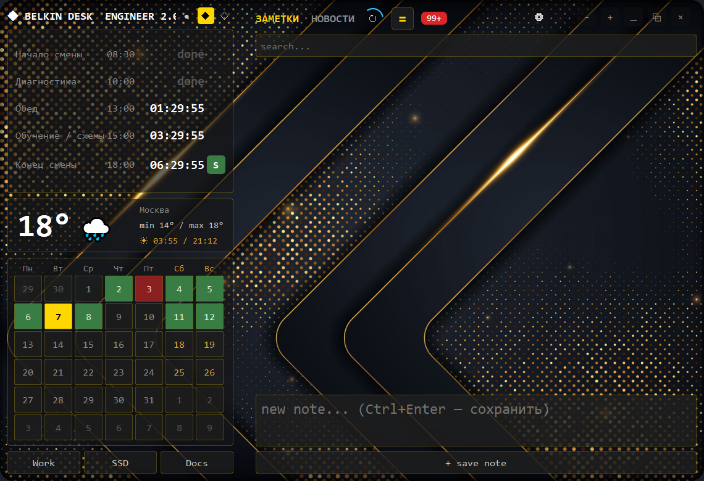
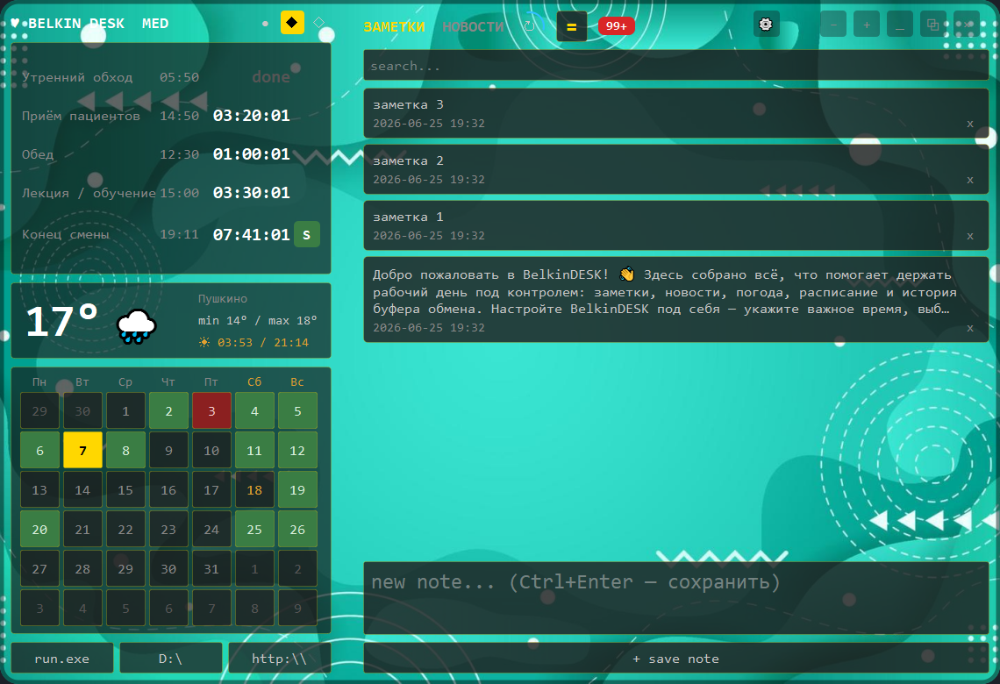
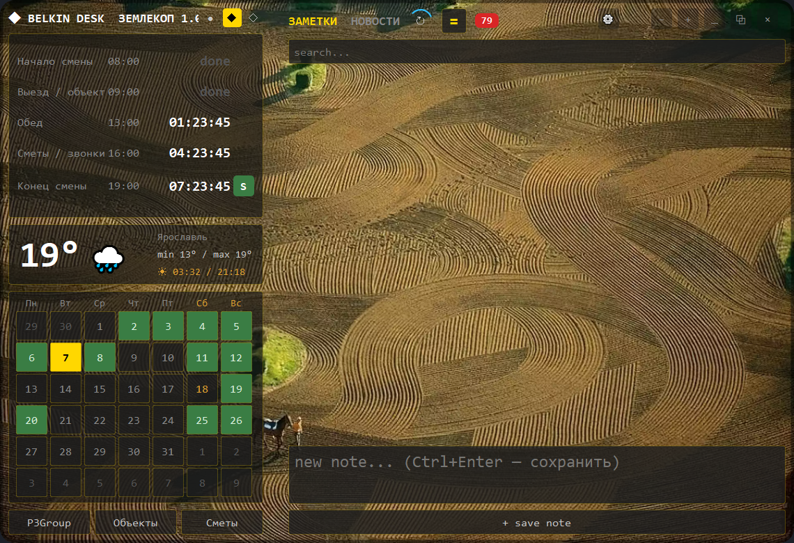

Windows · Technical intelligence
ENGINEER EDITION 2.0
Технические новости, ремонт, электроника и инженерная практика — в одном рабочем потоке без информационного шума.
Технические новости, ремонт, электроника и инженерная практика — в одном рабочем потоке без информационного шума.
Медицинские публикации, рекомендации и обучение для врача — собраны, переведены и кратко изложены.
Рынок материалов, земляные работы, техника, септики и загородная недвижимость — практическая лента для владельца бизнеса.
Без персонального токена программа не сможет переводить, проверять и перерабатывать карточки или создавать выжимки. Нужен аккаунт GitHub и Personal Access Token (classic) с единственным разрешением models.
Войдите в GitHub. Откройте Settings → Developer settings → Personal access tokens → Tokens (classic), затем нажмите Generate new token → Generate new token (classic).
Укажите название, например BelkinDESK, выберите срок действия и отметьте scope models. Нажмите Generate token и сразу скопируйте значение — повторно GitHub его не покажет.
Запустите программу, нажмите шестерёнку, откройте AI-РЕДАКТОР, вставьте токен в поле API-ключ и нажмите Сохранить всё.
Важно: токен равен паролю. Не отправляйте его другим людям, не публикуйте в GitHub и не вставляйте на посторонних сайтах. BelkinDESK хранит введённый токен локально в файле config.ini на вашем компьютере.
BelkinDESK собирает инженерные источники, показывает новости компактными карточками и превращает длинные материалы в понятные AI-выжимки.
Электроника, диагностика, ремонт, компоненты, embedded-разработка и новые технологии в едином потоке.
Перевод, нормализация карточек и краткий пересказ статьи с сохранением технических деталей.
RSS, сайты и YouTube-каналы настраиваются под конкретную специализацию инженера.
Расписание смены, погода, календарь, заметки и быстрые рабочие ссылки всегда перед глазами.

Скриншот снят с актуальной рабочей версии. Рентген-лупа подсвечивает структуру интерфейса, не подменяя содержимое мокапом.
Профиль для кардиолога: клинические публикации, медицинские новости и обучение с переводом и содержательными краткими пересказами.
Профессиональные журналы, рекомендации, исследования и профильные видеоматериалы.
Краткий пересказ концентрируется на сути статьи, сохраняя исследования, препараты, цифры и термины.
Изображения из публикации открываются вместе с текстом и доступны в увеличенном просмотре.
Единая логика рабочего стола и отдельная сборка для каждой платформы.

Новости, заметки, расписание и быстрый доступ к AI-выжимкам объединены в одном спокойном интерфейсе.
Специализированная редакция следит за тем, что действительно влияет на земляные работы: материалы, техника, участки, спрос и практические технологии.
Изменения стоимости стройматериалов, новые поставки и отраслевые сигналы рынка.
Спрос, участки, строительство и изменения условий на рынке загородной недвижимости.
Земляные работы, дренаж, септики, спецтехника и реальные способы решения полевых задач.
Лента адаптирована для P3Group и помогает замечать новые заказы, риски и возможности.

Реальный актуальный интерфейс с новым фоном полей. Тёмные панели сохраняют контраст текста поверх насыщенного изображения.